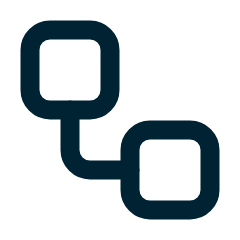
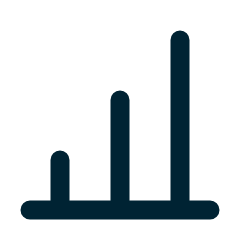

KOERSPLAN
Efficiency en organisatie als voorwaarde
Op deze onderdelen van ons koersplan heeft Eduface impact.
Inzet op IT

Betere processen

Datagedreven

Een stevig kernteam
ACCREDITATIE
Elke beoordeling blijft navolgbaar, de docent blijft eindverantwoordelijk

EIS
Beoordeling is navolgbaar
MET EDUFACE
Elk cijfer heeft een onderbouwing per rubriccriterium.
Een audit trail die voldoet aan de AI Act legt elke summatieve beoordeling vast.
Blijft: de docent stelt het cijfer vast

EIS
Beoordelaars oordelen consistent
MET EDUFACE
Een overzicht toont welke beoordelaar afwijkt van het team.
Blijft: kalibratie twee keer per jaar
EIS
De examencommissie borgt de kwaliteit
MET EDUFACE
Per beoordeling is de onderbouwing direct in te zien.
Blijft: de steekproef
WAAROM NU
Bij nieuwe accreditaties is consistent beoordelen een aandachtspunt. De Pabo zit nu in accreditatie.
Business case Eduface · Academica University of Applied Sciences · concept
3